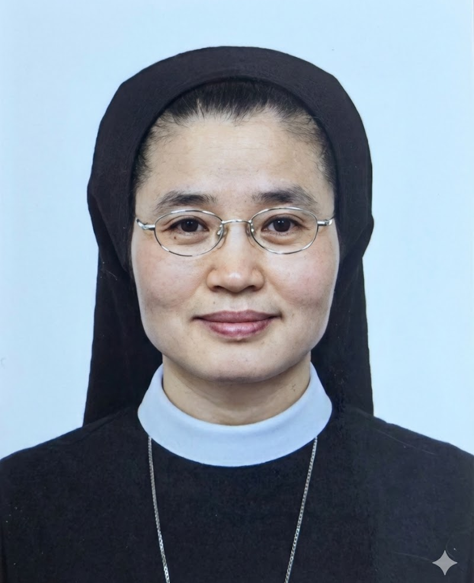

중고등부
축일 : 1월 28일
“아이 하나를 키우기 위해서는 온 마을이 필요하다” 는 아프리카 속담이 있습니다. 한 사람이 온전한 성인으로 커나가기 위해서는 그만큼 많은 분들의 관심과 노력이 필요하다는 뜻이지요. 성장기의 가장 중요한 시기를 보내고 있는 청소년들에게, 이러한 주변의 관심과 노력은 단순히 한 순간의 보살핌에 불과한 것이 아닌 인생의 방향을 좌우하고 결정하는 데에 큰 도움이 될 수 있을 것입니다.
서울대교구 청소년국 중고등부는, 이렇게 청소년들을 향해 관심과 도움을 주기를 바라는 많은 분들의 동반자로서 역할을 하고자 합니다. 청소년들이 예수 그리스도의 가르침에 따라 올바른 신앙인으로, 또 세상에 예수 그리스도의 사랑을 전하는 사도로서 생활하고 자라날 수 있도록 도우며 청소년들과 함께 하고자 하는 모든 이들과 함께 하겠습니다. 온 마을이 힘을 합쳐 한 명의 아이를 키워내는 것처럼, 우리 교회의 미래인 청소년들을 위해 보다 많은 분들께서 힘을 보태 주시기를 청합니다. 교회의 미래, 세상의 미래를 가꾸어 나가는 이 여정에 여러분을 초대합니다!

축일 : 9월 29일
"하느님은 사랑이십니다."(1요한 4,16)
저는 청소년 여러분을 만날 때마다 요한보스코 성인이 말씀하신 '젊다는 이유 하나만으로도 사랑받을 자격이 있다.' 라고 하신 것을 기억합니다. 하느님께서 우리에게 주신 당신 닮은 사랑과 선함 그리고 진리와 이상을 실현할 수 있도록 은총으로 함께하십니다. 사랑하는 우리 청소년들이 고달픈 세상에서 흔들리지 않는 뿌리 깊은 나무처럼 하느님의 사랑받는 자녀로 잘 성장할 수 있도록 친구로서 동반하며 기도합니다.